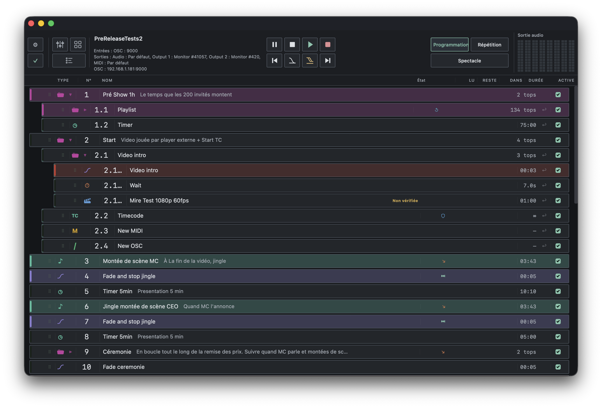

Topeur est un lecteur de conduite professionnel pour le théâtre et l'événementiel. Audio, Vidéo, MIDI, OSC, fondus, temporisations, groupes — tout s'enchaîne avec un seul appui sur Espace.

Philosophie
L'opérateur ne doit pas penser à l'outil — il doit penser au spectacle. Topeur repose sur quatre principes fondamentaux.
Ce qui est configuré est ce qui se joue. Aucun comportement caché, aucune surprise en représentation.
L'audio et le MIDI tournent dans des threads dédiés, indépendants de l'interface. Un ralentissement graphique n'affecte jamais la lecture.
Un projet est un bundle autonome. Copiez le dossier sur une autre machine, ouvrez-le, jouez. Rien à reconfigurer.
Topeur parle MIDI et OSC nativement — les deux protocoles standard de l'industrie du spectacle, en entrée comme en sortie.
Types de cues
Chaque élément sonore, chaque message de contrôle, chaque temporisation devient une cue numérotée. Enchaînez-les, groupez-les, automatisez-les.
Lecture de fichiers audio (WAV, MP3, FLAC, OGG, AIFF, M4A, Opus) avec contrôle de volume, points In/Out et boucle sample-accurate.
Transition de volume vers une cue audio cible, avec durée et volume cible configurables. Option d'arrêt automatique en fin de fade.
Pause temporisée avec décompte visuel. S'enchaîne automatiquement sur la cue suivante — idéal pour les transitions minutées.
Affichage de texte sur l'écran, avec contrôle de position, couleur et police.
Envoi de messages MIDI (Note On/Off, Control Change, Program Change, SysEx) vers n'importe quel équipement externe.
Envoi de messages Open Sound Control via UDP. Compatible QLab, consoles lumière, serveurs vidéo — avec arguments typés.
Regroupe plusieurs cues en un bloc : exécution simultanée, séquentielle ou aléatoire, avec option de bouclage interne.
Points forts
Chaque décision technique vise un seul objectif : que la représentation se déroule sans accroc, quoi qu'il arrive.
Lecture, fade et seek s'exécutent dans un thread dédié. Les performances graphiques n'impactent jamais la lecture.
Les boucles audio sont gapless — aucun silence, aucun artéfact aux jonctions de boucle.
Zoom, seek, scrub et poignées de trim In/Out directement sur la forme d'onde. Cache binaire pour un rechargement instantané.
Un clic, le prochain message reçu est capturé. Mappings persistés entre les sessions, avec wildcards sur canal, note et CC.
Écoute sur un port UDP configurable et envoi depuis les cues. Correspondance par adresse exacte ou wildcard.
Appuyez sur Échap : fade out général en 3 secondes sur toutes les cues actives, puis arrêt complet.
Compatibilité
Mêmes fonctionnalités partout. Un projet créé sur macOS s'ouvre sans modification sur Windows ou Linux.
Intel & Apple Silicon
CoreMIDI natif
x86_64
MME MIDI natif
x86_64
ALSA MIDI natif